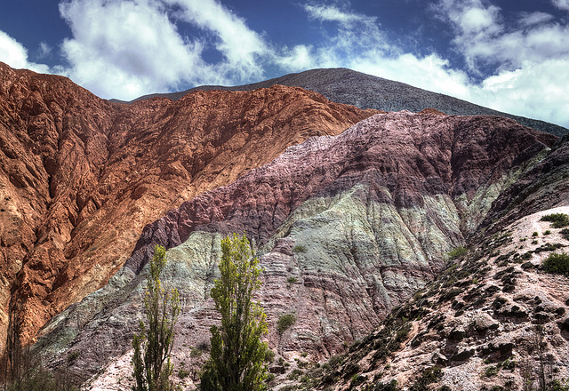
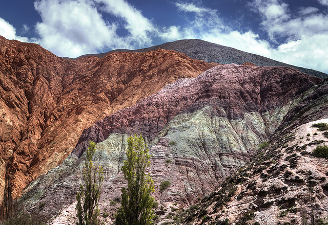
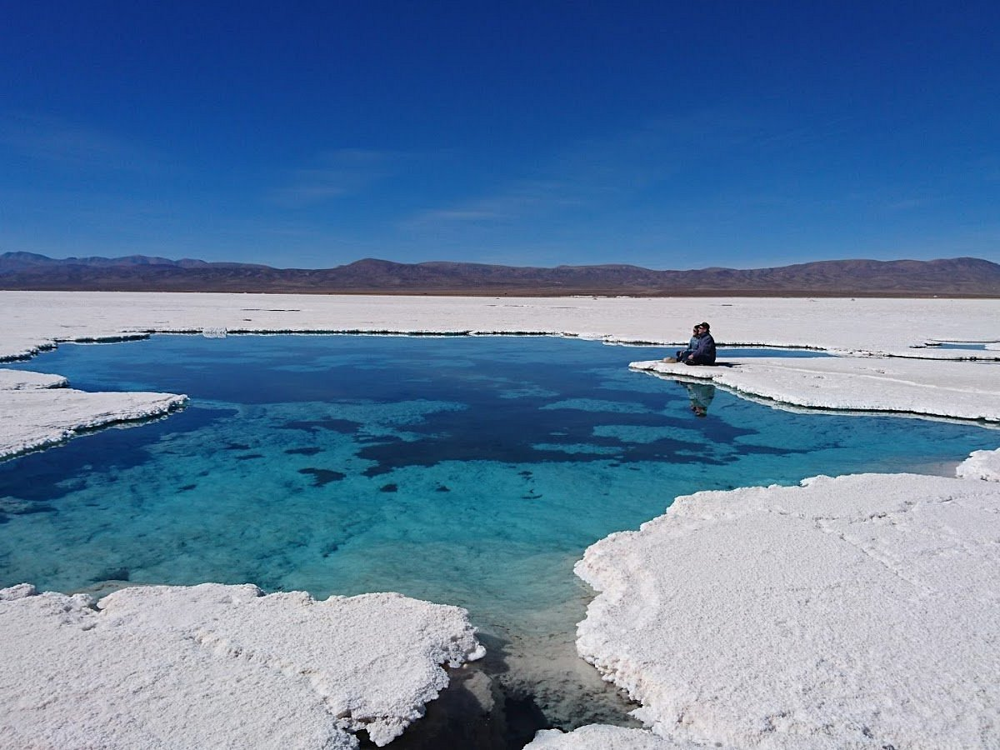
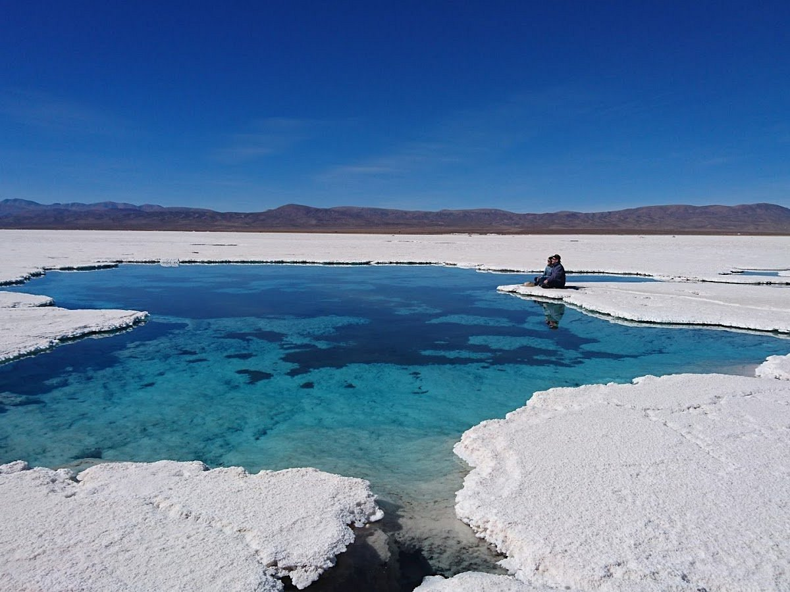

Jujuy

El relieve de la provincia de Jujuy se divide en cuatro regiones bien definidas Puna, Quebrada, Valles y Yungas, cada una de ellas bien diferenciada por su clima, biomas y actividades económicas. El resultando es una riqueza cultural y paisajística con características propias, que el turista ávido de experiencias puede encontrar recorriendo pocos kilómetros de distancia.
 

 

Ubicación Geográfica
La provincia de Jujuy se encuentra dentro del sistema andino sudamericano, escalonándose sucesivamente de oeste a este la Cordillera de los Andes, el Altiplano, la Quebrada y los Valles, dividiéndose en cuatro regiones bien diferenciadas por el relieve, clima, biomas y actividades económicas resultantes de la instalación humana desde tiempos prehistóricos hasta hoy, factores que, relacionados in situ, le imprimen características propias y muy variadas, atractivas a los ojos de cualquier observador ávido de experiencias en pocos kilómetros de distancia, sumándole valor agregado al paisaje de por sí digno de conocerse o visitarse en cualquier época del año.